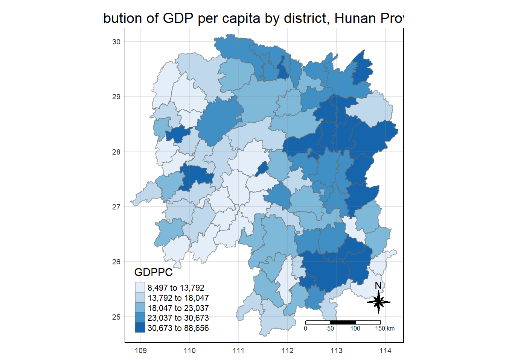

pacman::p_load(sf, tmap, sfdep, tidyverse, knitr, plotly)In-class Exercise 2
1 Overview
This in-class exercise introduces an alternative R package, sfdep. According to Josiah Perry, the developer of the package, “sfdep builds on the great shoulders of spdep package for spatial dependence. sfdep creates an sf and tidyverse friendly interface to the package as well as introduces new functionality that is not present in spdep. sfdep utilizes list columns extensively to make this interface possible.”
2 Getting Started - Installing and Loading the R Packages
The code chunk below loads the packages used in this in-class exercise:
sf for importing, managing, and processing geospatial data;
tidyverse (i.e. readr, tidyr, dplyr) for performing data science tasks such as importing, tidying, and wrangling data;
tmap for thematic mapping;
knitr for embedding R code in different document formats (e.g., HTML) to facilitate dynamic report generation;
sfdep for analysing spatial dependence and spatial relationships in data (building on spdep); and
plotly for making interactive plots.
3 Importing Data
For the purpose of the in-class exercise, the Hunan data sets are used:
Hunan’s County Boundary Layer. This is a geospatial data set in ESRI shapefile format.
Hunan’s Local Development Indicators 2012. This csv file contains data on selected Hunan’s local development indicators in 2012.
The data sets are placed under two sub-folders:
geospatial (County Boundary Layer), and
aspatial (Local Development Indicators 2012).
These two sub-folders are within the data folder of my In-class_Ex2 folder.
3.1 Importing shapefile
The st_read() (under sf package) is used to import the geospatial data set: hunan, a polygon feature layer in ESRI shapefile format.
Student Note: The geospatial objects are polygon features. There are a total of 88 features and 8 fields in
hunansimple feature data frame.hunanis in wgs84 coordinate system.
hunan = st_read(dsn = "data/geospatial", layer = "Hunan")Reading layer `Hunan' from data source
`C:\jmphosis\ISSS624\In-class_Ex\In-class_Ex2\data\geospatial'
using driver `ESRI Shapefile'
Simple feature collection with 88 features and 7 fields
Geometry type: POLYGON
Dimension: XY
Bounding box: xmin: 108.7831 ymin: 24.6342 xmax: 114.2544 ymax: 30.12812
Geodetic CRS: WGS 843.2 Importing csv file
The read_csv() (under readr package) is used to import the aspatial data set: hunan_2012, a csv file.
Student Note: The
hunan_2012tibble data frame contains 88 rows and 29 columns. There are two columns with character data - County and City.
hunan2012 = read_csv("data/aspatial/Hunan_2012.csv")3.3 Performing Relational Join
The attribute table of the spatial polygons data frame, hunan, is updated using the attribute fields of the tibble data frame, hunan2012 using left_join() (under dplyr package).
Student Note: Without explicitly stating the “by” argument for left_join(), the two tables are joined by the ‘County’ columns.
Student Note: Spatial data stated first in left_join() so as to retain sf data frame format.
Student Note: The geometry variable is automatically selected (when using dplyr package - part of tidyverse).
hunan_GDPPC = left_join(hunan,hunan2012) %>%
select(1:4, 7, 15)
hunan_GDPPCSimple feature collection with 88 features and 6 fields
Geometry type: POLYGON
Dimension: XY
Bounding box: xmin: 108.7831 ymin: 24.6342 xmax: 114.2544 ymax: 30.12812
Geodetic CRS: WGS 84
First 10 features:
NAME_2 ID_3 NAME_3 ENGTYPE_3 County GDPPC
1 Changde 21098 Anxiang County Anxiang 23667
2 Changde 21100 Hanshou County Hanshou 20981
3 Changde 21101 Jinshi County City Jinshi 34592
4 Changde 21102 Li County Li 24473
5 Changde 21103 Linli County Linli 25554
6 Changde 21104 Shimen County Shimen 27137
7 Changsha 21109 Liuyang County City Liuyang 63118
8 Changsha 21110 Ningxiang County Ningxiang 62202
9 Changsha 21111 Wangcheng County Wangcheng 70666
10 Chenzhou 21112 Anren County Anren 12761
geometry
1 POLYGON ((112.0625 29.75523...
2 POLYGON ((112.2288 29.11684...
3 POLYGON ((111.8927 29.6013,...
4 POLYGON ((111.3731 29.94649...
5 POLYGON ((111.6324 29.76288...
6 POLYGON ((110.8825 30.11675...
7 POLYGON ((113.9905 28.5682,...
8 POLYGON ((112.7181 28.38299...
9 POLYGON ((112.7914 28.52688...
10 POLYGON ((113.1757 26.82734...3.4 Visualising Regional Development Indicator
A basemap and a choropleth map are prepared usign qtm() (under tmap package) to visualise the 2012 Gross Domestic Product Per Capita (GDPPC).
basemap = tm_shape(hunan_GDPPC) +
tm_polygons() +
tm_text("NAME_3", size=0.5)
gdppc = qtm(hunan_GDPPC, "GDPPC")
tmap_arrange(basemap, gdppc, asp=1, ncol=2)
4 Deriving Contiguity Spatial Weights
By and large, there are two type of spatial weights, they are contiguity weights and distance-based weights. In this section, the contiguity spatial weights are derived by using sfdep package.
4.1 Deriving Contiguity Weights: Queen’s Method
wm_q = hunan_GDPPC %>%
mutate(nb = st_contiguity(geometry),
wt = st_weights(nb,
style = "W"),
.before = 1)Notice that st_weights() provides three arguments:
nb: A neighbour list object as created by st_neighbours().
style: Default “W” for row standardised weights. This value can also be “B”, “C”, “U”, “minmax”, and “S”.
The “style” argument set to “W” specifies a binary spatial weight matrix, where the presence of a spatial relationship is indicated by 1, and absence by 0. All neighbouring units are considered equal in terms of their impact on the target unit, reflecting a uniform spatial relationship.
If the “style” argument is set to “B”, it specifies a binary spatial lag matrix, where the presence of a spatial relationship is indicated by 1, and absence by 0. At the same time, the direction of the connection is considered for the calculations.
“C” is globally standardised (sums over all links to n), “U” is equal to “C” divided by the number of neighbours (sums over all links to unity), while “S” is the variance-stabilizing coding scheme proposed by Tiefelsdorf et al. (1999) (sums over all links to n).
.before = 1: indicates that the new columns should appear at the front.
wm_fd =
5 Distance-based Weights
6 Global Measures of Spatial Autocorrelation
GLSA
Moran’s I
Compute Local Moran’s I of GDPPC at county level by using local_moran() (under sfdep package).
Student Note: unnest() to list the output statistics as individual columns.
lisa = wm_q %>%
mutate(local_moran = local_moran(
GDPPC, nb, wt, nsim = 99),
.before = 1) %>%
unnest(local_moran)The output of local_moran() is a sf data frame containing the columns ii, eii, var_ii, z_ii, p_ii, p_ii_sim, and p_folded_sim.
ii: the local Moran’s I statistic.
e.Ii: the expectation of local Moran’s I statistic under the randomisation hypothesis.
var.Ii: the variance of local Moran’s I statistic under the randomisation hypothesis.
z.Ii: the standard deviate of local Moran’s I statistic.
p_ii: the p-value of local Moran’s I statistic.
p_ii_sim: the p-value of local Moran’s I statistic for the simulated (permutation) outcomes.
p_folded_sim:
EHSA
GDPPC = read_csv("data/aspatial/Hunan_GDPPC.csv")Student Note: ‘Year’ variable is numerical data type (not datetime).
Creating a Time Series Cube
The spacetime() (under sfdep package) is used to create a spacetime cube.
GDPPC_st = spacetime(GDPPC, hunan,
.loc_col = "County",
.time_col = "Year")The is_spacetime_cube() (under sfdep package) is used to verify if GDPPC_st is indeed a spacetime cube object. The TRUE return below confirms that GDPPC_st object is indeed a spacetime cube.
is_spacetime_cube(GDPPC_st)[1] TRUEComputing Gi*
GDPPC_nb = GDPPC_st %>%
activate("geometry") %>%
mutate(nb = include_self(st_contiguity(geometry)),
wt = st_inverse_distance(nb, geometry,
scale = 1,
alpha = 1),
.before = 1) %>%
set_nbs("nb") %>%
set_wts("wt")activate() (under dplyr package) is used to activate the geometry context.
mutate() (under dplyr package) is used
Computing Gi*
gi_stars = GDPPC_nb %>%
group_by(Year) %>%
mutate(gi_star = local_gstar_perm(
GDPPC, nb, wt)) %>%
unnest(gi_star)
gi_stars# A tibble: 1,496 × 13
# Groups: Year [17]
Year County GDPPC nb wt gi_star e_gi var_gi p_value p_sim
<dbl> <chr> <dbl> <list> <list> <dbl> <dbl> <dbl> <dbl> <dbl>
1 2005 Anxiang 8184 <int [6]> <dbl> 0.398 0.0116 3.08e-6 0.302 0.762
2 2005 Hanshou 6560 <int [6]> <dbl> -0.237 0.0109 2.52e-6 -0.0147 0.988
3 2005 Jinshi 9956 <int [5]> <dbl> 1.05 0.0125 3.00e-6 0.614 0.539
4 2005 Li 8394 <int [5]> <dbl> 0.966 0.0119 3.25e-6 0.809 0.419
5 2005 Linli 8850 <int [5]> <dbl> 1.05 0.0120 2.84e-6 0.948 0.343
6 2005 Shimen 9244 <int [6]> <dbl> 0.210 0.0121 2.91e-6 -0.169 0.866
7 2005 Liuyang 13406 <int [5]> <dbl> 3.91 0.0144 3.47e-6 2.79 0.00523
8 2005 Ningxiang 11687 <int [8]> <dbl> 1.61 0.0127 2.28e-6 0.875 0.382
9 2005 Wangcheng 14659 <int [7]> <dbl> 3.88 0.0140 2.58e-6 2.66 0.00775
10 2005 Anren 7423 <int [9]> <dbl> 1.67 0.0113 2.11e-6 1.87 0.0617
# ℹ 1,486 more rows
# ℹ 3 more variables: p_folded_sim <dbl>, skewness <dbl>, kurtosis <dbl>Mann-Kendall Test
Arrange to Show Significant Emerging Hot/Cold Spots
cbg = gi_stars %>% ungroup() %>% filter(County == “Changsha”) |> select()
ggplot(data = cbg, aes(x = Year, y = ))
Performing Emerging Hotspot Analysis
ehsa = emerging_hotspot_analysis( x = GDPPC_st, .var = “GDPPC”, k = 1, nsim = 99 )
k = 1 means comparing time series sequentially
nsim = 99 means 99 simulations to perform permutation
x = GDPPC_st (already includes the spatial element)
Intepreting the map
Grey areas = no value
Not the same as no pattern (which could be statistically significant).
ehsa_sig = hunan_ehsa %>% filter(p_value < 0.05) tmap_mode(“plot”) tm_shape(hunan_ehsa) + tm_polygons() + tm_borders(alpha = 0.5) + tm_shape(ehsa_sig) + tm_fill(“classification”) + tm_borders(alpha = 0.4)
~~~ End of In-class Exercise 2 ~~~